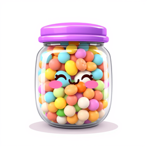

SugarWidgets
Ready-made TUI components — tables, tabs, progress bars, spinners, and more

Table, Tabs, Tree, Progress, Paginator, Help, Key, Timer, Stopwatch, Button and Rule — first-party components — plus the btop render helpers Input\TextEdit and Menu\OptionRow, and the deprecated alias re-exports from sugarcraft/sugar-forms — the canonical counted inventory lives in the README: depend on sugarcraft/sugar-forms directly for those, the re-exports here exist only for migration. Everything you'd hand-roll on day one of a TUI project, ready to drop into your Model.
Install
composer require sugarcraft/sugar-widgetsQuickstart
use SugarCraft\Forms\TextInput\TextInput;
use SugarCraft\Forms\Spinner\Spinner;
use SugarCraft\Core\{Cmd, Model, Msg, Program, Subscriptions};
use SugarCraft\Core\Msg\KeyMsg;
use SugarCraft\Core\KeyType;
final class Search implements Model {
public function __construct(
public readonly TextInput $ti,
public readonly Spinner $sp,
) {}
public function init(): ?\Closure { return $this->sp->tick(); }
public function subscriptions(): ?Subscriptions { return null; }
public function update(Msg $msg): array {
if ($msg instanceof KeyMsg && $msg->type === KeyType::Enter) {
return [$this, Cmd::quit()];
}
[$ti, $cmd] = $this->ti->update($msg);
[$sp, $cmd2] = $this->sp->update($msg);
return [new self($ti, $sp), Cmd::batch($cmd, $cmd2)];
}
public function view(): string {
return $this->sp->view().' '.$this->ti->view();
}
}
[$input] = TextInput::new()->focus(); // focus() returns [TextInput, ?Cmd]
(new Program(new Search($input, Spinner::new())))->run();What's in the box
Progress + spring-physics AnimatedProgress driven by SugarSpring.ValidateOn timing control, keystroke restrict pattern filter, line numbers, soft-wrap, dynamic-height growth.styleFunc(row, col) => Style, multi-column sort with withSort() / thenSortBy() / clearSort(), filtering with withFilterable() / withFilter() / withFilterPredicate() (default: case-insensitive substring match over every cell of every row), and pagination with withPageSize() / paginator() / withPage() / nextPage() / prevPage() / pageFirst() / pageLast() — integrates with sort and filter.g / G jump.Input\TextEdit is an immutable inline editor with an underline caret (no hardware cursor), grapheme-cluster editing, cell-budget windowing and a digits-only mode; Menu\OptionRow::renderRow() draws btop's one-line options row (the two-line render() is deprecated). Progress::withColorFunc closures also receive the bar width for position-colored ramps.TextEdit + OptionRow
use SugarCraft\Widgets\Input\TextEdit;
use SugarCraft\Widgets\Menu\OptionRow;
$edit = TextEdit::new('firefox')->home()->right()->right();
echo $edit->view(); // "fi\e[4mr\e[24mefox" — underline caret on "r"
echo OptionRow::renderRow('Update ms', TextEdit::new('2000', numeric: true),
selected: true, editing: true, hasArrows: true, editable: true);Source & demos
- Source on GitHub
- Full README
- Runnable examples
- Originally inspired by bubbles (Go); SugarCraft is developed as a native PHP project.
Concepts
Each component is an immutable value. Every with*() setter returns a changed copy and leaves the receiver as it was. The interactive components, such as Table, Tabs, Paginator and Timer, take input through update() and return the new state with any command, so they plug into a Program model the same way as a hand-written one.
API reference
| Class | Method | Description |
|---|---|---|
| TextInput | new() | Create a new text input instance (deprecated alias — depend on sugarcraft/sugar-forms) |
| TextInput | update(Msg) | Handle input events |
| TextInput | withValidateOn(ValidateOn) | Set validation timing — None (default) and Change validate on every edit; Blur and Submit defer validation |
| TextInput | withRestrict(string $pattern) | PCRE regex filter — only matching keystrokes are accepted |
| ValidateOn | enum | Cases: None (default) / Change — validate on every edit; Blur / Submit — deferred until focus loss or submit |
| TextArea | new() | Create a multi-line text area (deprecated alias — depend on sugarcraft/sugar-forms) |
| Spinner | new(?Style $style = null) | Create spinner; style optional (defaults to line) (deprecated alias — depend on sugarcraft/sugar-forms) |
| Spinner | tick() | Return tick command for animation |
| Table | new(headers, rows) | Create data table |
| Table | withSort(string $column, SortDirection $dir = Asc) | Set primary sort column and direction — clears prior sort chain |
| Table | thenSortBy(string $column, SortDirection $dir = Asc) | Add secondary (or further) sort tiebreaker |
| Table | clearSort() | Remove all sort criteria, restoring insertion order |
| Table | sortState(): SortState | Return current sort criteria (readonly) |
| Table | styleFunc(?Closure) | Per-cell style composer fn(int $row, int $col): Style (row -1 = header). Each returned style is merged under the row's selection/header style via Style::inherit(), so the cursor inversion always wins over cell decoration |
| Table | getStyleFunc(): ?Closure | Return the current composer (seam for host-side re-composition) |
| Table | withFilterable(bool) | Enable or disable the filter feature |
| Table | withFilter(string $query) | Set filter query string — default: case-insensitive substring match on all visible columns |
| Table | withFilterPredicate(?Closure(list<string>): bool) | Custom filter callable — null restores the default |
| Table | filterable(): bool | Return whether filtering is enabled |
| Table | filter(): string | Return the current filter query string |
| Table | filterPredicate(): ?Closure | Return the current custom filter predicate |
| SortDirection | enum | Cases: Asc / Desc — use toggle() to flip direction |
| SortState | DTO | Immutable list of (column index, SortDirection) pairs |
| Table | withPageSize(int $size) | Set rows per page — 0 disables pagination, ≥1 enables it |
| Table | withPage(int $page) | Navigate to a zero-based page (clamps to valid range) |
| Table | nextPage() | Advance one page — returns new Table |
| Table | prevPage() | Retreat one page — returns new Table |
| Table | pageFirst() | Jump to the first page — returns new Table |
| Table | pageLast() | Jump to the last page — returns new Table |
| Table | pageSize(): int | Return rows per page (0 = pagination disabled) |
| Table | currentPage(): int | Return the current zero-based page |
| Paginator | totalPages(): int | Return total page count (via the table's paginator) |
| Table | paginator(): Paginator | Return a Paginator wired to the table's current page state |
| Tree | new(Node ...$roots) | Create tree view from root nodes via the Tree::new() factory — immutable-fluent; the constructor itself is private |
| Tree | withStyle(...) | Immutable override of the chrome knobs — cursorPrefix / unselectedPrefix / expandedGlyph / collapsedGlyph / leafGlyph (sanitized to single-line) |
| Viewport | new(width = 80, height = 24) | Create scrollable viewport; content arrives via setContent(string) (deprecated alias — depend on sugarcraft/sugar-forms) |
| Progress | new(ratio) | Create progress bar from a 0.0–1.0 ratio (clamped; NaN renders 0%) |
| Progress | withPercent(float) | Return a new bar at the given ratio (same clamp; accepts NaN → 0%) |
| Progress | withColorFunc(?Closure) | Per-filled-cell color fn(int $i, int $filledCells, float $percent, int $barWidth): Color — the 4th arg (true bar width) enables btop position-colored ramps; 3-arg closures still work |
| Progress | withRenderMode(ProgressRenderMode) | Switch the glyph set — Block / Line / Slim render modes |
| Progress | withPercentFormat(string $fmt) | Custom % suffix printf format receiving the 0–100 integer (default '%3d%%') |
| Timer | new(float $duration, float $interval = 1.0) | Countdown; duration is required. start() returns the next [model, Cmd] pair and subscriptions() arms the tick loop; the epoch on each TickMsg refuses counts from stopped generations |
| Stopwatch | new(float $interval = 1.0) | Count-up; elapsed is a tick-count accumulator (ticks × interval), not wall-clock |
| Button | new(string $label) | One-line [ Label ] push button — a SugarCraft original; withFocused() / withDisabled() / withStyles() / withZoneManager(); Enter, Space or a click on its sugar-mouse zone makes update() return a Cmd yielding a ButtonPressedMsg; a disabled button is inert |
| Rule | new(int $length = 0) | Horizontal or vertical divider (vertical()), optional withTitle(), withRune() (one cell), withStyle() — a SugarCraft original; length 0 = auto (40 cells), unstyled output has no SGR |
| Help | new(separator, keyDescGap, columnGap, showAll, maxWidth, ellipsis, fullSeparator, styles) | Keybinding help overlay — all params optional; withKeyDescGap() / withColumnGap() / withWidth() return new instances |
| Help | fullView(KeyMap|KeyBindings $map) | Full help block; given a sugar-core Keys\KeyBindings registry, every row is generated from it (key column from label(), description from help()), so help text is never hand-maintained. shortView() and view() accept the registry too |
| KeyView | new(KeyBindings $bindings) | The KeyMap a registry presents to Help: binding(string $id) derives one Key\Binding; withShort(), withColumns() and withColumnSize() choose the layout; an action with no keys is a disabled binding |
| HelpOverlay | new(KeyMap|KeyBindings $keyMap, ?Help $help = null) | Scrollable full-help TEA model: update() scrolls on arrows, j/k, PageUp/PageDown/space, Home/End and the wheel, and closes on Escape, q or ? with a Cmd carrying HelpOverlayClosedMsg; withHeight() sets the window, withKeys() remaps its own keys |
| Paginator | withTotalPages(int) | Set page count directly (converts via perPage); setTotalPages() is the deprecated spelling |
| Tabs | withZoneManager(?Manager) | Mouse-zone opt-in — zones are emitted only when a supplied sugar-mouse Manager or Mark (withMark()) is attached; passing null detaches it again |
| Tabs | withMark(?Mark) | Manager-free zone opt-in — emits bare <zoneKey>tab-N / <zoneKey>close-N zones; the host scans the frame and passes a hit id to clickZone(); a Manager takes precedence, null detaches |
| Tabs | interactive(array $labels, Manager|Mark $zones, int $width = 0) | Builds a bar with a Manager or a Mark attached in one call |
| Tabs | withBadge(int $index, ?string $badge) | Draws a badge after a label; null or empty removes it, withBadgeStyle() styles it |
| Tabs | withClosable(bool $closable = true) | Draws a close affordance (×, withCloseGlyph() replaces it); its click, or ctrl+w while focused, closes the tab and returns a Cmd carrying TabClosedMsg |
| Tabs | moveTab(int $from, int $to) | Reorders a tab; its badge and the active tab follow it (closeTab($i) is the matching remove verb) |
| Tabs | withZoneKey(string $key) | Pins the bar's zone-id prefix. Bars derived from one template share its key, so give each bar its own withZoneKey() when they share a sugar-mouse Manager. Keys must be non-empty and unique per manager (an empty key throws \InvalidArgumentException). |
| OptionRow | renderRow(...) | One-line btop options row sized to the field width — the primary API |
| TextEdit | new(text, ?caret, numeric) | Immutable inline editor (btop Draw::TextEdit); underline caret, grapheme-cluster caret |
| TextEdit | left() / right() / home() / end() / withCaret(int) | Caret movement (clamped) |
| TextEdit | insert(string) / backspace() / delete() / clear() | Edits; numeric mode rejects non-digit input |
| TextEdit | withNumeric(bool) | Digits-only mode — strips existing non-digits |
| TextEdit | view(int $limit = 0) | Render with SGR 4 underline caret, windowed to $limit display cells |
| OptionRow | render(name, value, selected, editing, hasArrows, …) | btop options-menu two-line row (bold centered name + ← value → / ↵) (deprecated — use renderRow() for the width-correct single-line row) |
| FilePicker | new(?string $cwd = null, int $height = 10) | Create file picker — cwd optional (defaults to the process cwd), height in rows (deprecated alias — depend on sugarcraft/sugar-forms) |
| ItemList | new(items) | Create selectable item list; items are Item/StringItem values (deprecated alias — depend on sugarcraft/sugar-forms) |
Configuration
Constructor defaults and the setters that change them. Values are the ones the classes ship with.
Timer::new(float $duration, float $interval): seconds, default$interval = 1.0. Sets the countdown length and the tick interval.withInterval()changes the tick interval later.Table::new(headers, rows, $width, $height): int, default$width = 0,$height = 10. Initial size of the table.withSize()changes it.Table::withStyles(?Styles):?Styles, default no override. Replaces the table's style set.nullis accepted.Paginator::withType(Type):Type, default set onPaginator::new(). Chooses how the page position is drawn.Paginator::withDots(string $active, string $inactive): string, default●active and○inactive, set byPaginator::new(). The glyphs for the active and inactive dots when the dot style is used.
Keys
Tabs binds Tab to the next tab and Shift+Tab to the previous one. Each binding is a Key\Binding with its keys and a Key\Help entry, so the bar can show the key hints. Key\Binding::any() tests a key message against a set of bindings, and withEnabled() turns a binding off without removing it.
Theming
Components are styled through sugar-style values. Help\Styles::uniform(Style $s) gives every part of the help line the same style. Table::withStyles() takes a Table\Styles set, and Table::withUnfocusedSelection(?Style) sets the muted style drawn on the cursor row while the table is blurred. null restores the default dim.
Examples
examples/ holds 17 files, one per component, plus a timer that runs on a real event loop. Each runs with php examples/<name>.php.
spinner.php: Runs every spinner style for a short time each.text-input.php: Every TextInput state side by side: empty with a placeholder, and the others.text-input-enhanced.php: The enhanced TextInput features, including custom placeholder styling.text-area.php: A static snapshot of the multi-line text area.item-list.php: A scrollable list with a title and a selection.table.php: A styled table with headers, rows and custom styling.tree.php: The tree component.viewport.php: A scrollable region rendered at three Y offsets.file-picker.php: The file picker over a known directory.progress.php: An animated bar from 0% to 100%, then a static showcase.cursor.php: The cursor in each of its three modes.help.php: The short and full help views built from a sample set of bindings.paginator.php: Dot-style and Arabic-style pagination at three positions.stopwatch.php: Starts the stopwatch, lets it tick, then shows the elapsed time.timer.php: Countdown formatting at four checkpoints, then a live countdown.tabs.php: An interactive tabbed panel that switches withTabandShift+Tab.timer-loop.php: The timer on a real event loop, fromTimerTickthroughupdate().
Testing
cd sugar-widgets
composer install
vendor/bin/phpunitThe suite is PHPUnit 10 and uses sugar-testing from require-dev. tests/GoldenRenderTest.php compares rendered output against golden files with its helpers.
Only methods declared in sugar-widgets/src, or inherited from a parent declared there, are listed. A type that extends a class outside that tree, such as \RuntimeException, does not show the methods of that class.
SugarCraft\Widgets
Lang final class
Per-library translation facade for sugar-widgets.
SugarCraft\Widgets\Button
Button final class
A one-line push button: [ Label ].
| Method | Summary |
|---|---|
static new(string $label): self | |
init(): ?\Closure | |
subscriptions(): ?\SugarCraft\Core\Subscriptions | |
update(Msg $msg): array | |
view(): string | |
__toString(): string | |
withLabel(string $label): self | |
withFocused(bool $focused = true): self | |
focus(): self | |
blur(): self | |
withDisabled(bool $disabled = true): self | |
withStyles(?Style $normal = null, ?Style $focused = null, ?Style $disabled = null): self | Per-state styles; null keeps the current one. |
withZoneManager(?Manager $manager): self | |
withZoneId(string $id): self | Zone id minted for the click target; lets one host tell buttons apart. |
ButtonPressedMsg final class
Emitted (as a Cmd result) when a Button is activated by Enter, Space or a mouse click. The host matches it in its own update().
| Method | Summary |
|---|---|
__construct(public readonly string $label, public readonly string $zoneId) | |
announcement(): string | Screen-reader / status-line text for the activation (localised). |
SugarCraft\Widgets\Help
Help final class
Renders a KeyMap as either a short, single-line summary or a multi-column full-help block.
| Method | Summary |
|---|---|
static new(string $separator = ' • ', string $keyDescGap = ' ', string $columnGap = ' ', bool $showAll = false, int $maxWidth = 0, string $ellipsis = '…', string $fullSeparator = "\n", ?Styles $styles = null, bool $showDisabled = false): self | House factory and sole constructor door; forwards every promoted default. |
withStyles(?Styles $styles): self | Override the rendered colour / styling of every visible help element. Mirrors charmbracelet/bubbles help.Styles struct. Default null means "no styling" (every binding rendered verbatim) so existing callers / snapshots are unchanged. |
getStyles(): ?Styles | Read-only accessor; the bare name styles() is taken by the fluent setter below. |
withSeparator(string $s): self | |
withShowAll(bool $on = true): self | Toggle the unified view() entry between short and full rendering. false (default) → short row; true → full block. Mirrors charmbracelet/bubbles Help.ShowAll field. |
showAll(bool $on = true): self | BC short form of withShowAll(). |
withShowDisabled(bool $on = true): self | Include DISABLED bindings in the rendered help (both views). Off by default — the skip-disabled posture mirrors Bubbles'; with it on, greyed-out bindings still document what exists: a host can grey the row in its own Binding help text and let the footer show the full command surface. updateWithBinding() never toggles on a disabled binding regardless of this flag, and a binding with no help text stays skipped either way. |
withWidth(int $cells): self | Cap the rendered width (cells) of BOTH views. Short: entries past the budget are cut and the $ellipsis glyph is appended. Full (W-17): below ~40 cells the column matrix stacks into a single column, and every row is clamped to the same SGR-balanced truncation, so no row overruns the cap. Pass 0 (default) to disable truncation. Mirrors charmbracelet/bubbles Help.SetWidth / Help.Width. |
width(int $cells): self | BC short form of withWidth(). |
withKeyDescGap(string $gap): self | Gap rendered between a binding's key column and its description. |
withColumnGap(string $gap): self | Gap between columns in the short (grid) help view. |
getWidth(): int | Read-only accessor for the configured max width; the bare name width() is the setter above. |
withEllipsis(string $glyph): self | Truncation glyph appended when a rendered row exceeds $maxWidth. |
withFullSeparator(string $s): self | Separator between rows in the full-help block (default newline). |
styles(?Styles $styles): self | |
separator(string $s): self | |
ellipsis(string $glyph): self | |
fullSeparator(string $s): self | |
update(Msg $msg): self | Pass-through update — returns $this for every message unchanged. |
updateWithBinding(Msg $msg, Binding $toggle): self | Variant of update() that takes the toggle binding directly — useful for KeyMaps that expose a custom toggle binding outside the canonical short/full pair. The returned instance has its showAll flag flipped when the message matches the binding. |
view(KeyMap|KeyBindings $map): string | Unified entry: render short or full according to $showAll. Mirrors charmbracelet/bubbles Help.View(KeyMap). |
shortView(KeyMap|KeyBindings $map): string | Render the inline (short) help row from KeyMap::shortHelp(). |
fullView(KeyMap|KeyBindings $map): string | Render the multi-column full help block from KeyMap::fullHelp(). Given a KeyBindings registry, every row is generated from it: one row per action, the key column from KeyBindings::label(), the description from KeyBindings::help() (one column; wrap the registry in KeyView to choose a layout). |
shortHelpView(array $bindings): string | Render an arbitrary list of Bindings as a short row, bypassing the KeyMap. Mirrors charmbracelet/bubbles Help.ShortHelpView([]Binding). |
fullHelpView(array $columns): string | Render an arbitrary multi-column matrix of Bindings as a full block, bypassing the KeyMap. Mirrors charmbracelet/bubbles Help.FullHelpView([][]Binding). |
HelpOverlay final class
The full key reference as a scrollable TEA model: the rows are Help::fullView() of the host's key map (generated from a sugar-core KeyBindings registry when one is given), clipped to $height rows and scrolled by its own bindings — arrows / j k, PageUp / PageDown / space, Home / End, and the mouse wheel.
| Method | Summary |
|---|---|
static new(KeyMap|KeyBindings $keyMap, ?Help $help = null): self | An open overlay over $keyMap, ten rows tall, scrolled to the top. |
static defaultKeys(): KeyBindings | The overlay's navigation actions: scroll-up, scroll-down, page-up, page-down, top, bottom, close. |
init(): ?\Closure | |
update(Msg $msg): array | |
view(): string | The visible window of the full help: at most $height rows from $offset; empty while closed. |
subscriptions(): ?Subscriptions | |
withKeyMap(KeyMap|KeyBindings $keyMap): self | Replace the key map (offset re-clamped to the new content). |
withHelp(Help $help): self | Replace the renderer (styles, gaps, width cap). |
withKeys(KeyBindings $keys): self | Remap the overlay's own navigation (see defaultKeys()). |
withHeight(int $rows): self | Visible rows; at least one. |
withOpen(bool $open): self | Open or close the overlay; opening keeps the last scroll position. |
scrollBy(int $rows): self | Move the window by $rows (negative scrolls up), clamped to the content. |
scrollTo(int $row): self | Put row $row at the top of the window, clamped to the content. |
lineCount(): int | Rows in the full help (before clipping). |
maxOffset(): int | The largest useful offset: the last row sits on the bottom edge. |
atTop(): bool | |
atBottom(): bool |
HelpOverlayClosedMsg final class
Sent through a Cmd when a HelpOverlay closes itself on its close binding, so the host can drop the overlay layer and restore focus.
Styles final class
Styles for Help: one slot per visible help element. All default to a no-op Style so existing snapshot tests keep passing; pass non-default styles to Help::withStyles() to customise. Mirrors charmbracelet/bubbles help.Styles.
| Method | Summary |
|---|---|
__construct(?Style $shortKey = null, ?Style $shortDesc = null, ?Style $shortSeparator = null, ?Style $fullKey = null, ?Style $fullDesc = null, ?Style $fullSeparator = null, ?Style $ellipsis = null) | |
static uniform(Style $s): self | Convenience: every element styled identically. |
SugarCraft\Widgets\Input
TextEdit final class
Inline single-line editor that draws its caret as an UNDERLINE on the cluster under it — no real terminal cursor is moved or shown.
| Method | Summary |
|---|---|
static new(string $text = '', ?int $caret = null, bool $numeric = false): self | |
text(): string | |
caret(): int | Caret position as a grapheme-cluster index in [0, length()]. |
numeric(): bool | |
length(): int | Number of grapheme clusters in the text. |
withNumeric(bool $on = true): self | Digits-only mode (btop signal / renice / int option fields). |
withCaret(int $pos): self | Move the caret; out-of-range positions clamp to [0, length()]. |
left(): self | Mirrors btop TextEdit::command("left"). |
right(): self | Mirrors btop TextEdit::command("right"). |
home(): self | Mirrors btop TextEdit::command("home"). |
end(): self | Mirrors btop TextEdit::command("end"). |
insert(string $chars): self | Insert at the caret and advance past the inserted text. |
backspace(): self | Delete the cluster BEFORE the caret. Mirrors btop command("backspace"). |
delete(): self | Delete the cluster UNDER the caret. Mirrors btop command("delete"). |
clear(): self | Empty the field. btop's clear() leaves pos/upos pointing past the end of the now-empty string; resetting the caret here avoids that. |
view(int $limit = 0): string | Render inline within $limit display cells, windowing around the caret. |
SugarCraft\Widgets\Key
Binding final class
A keybinding: a list of accepted key strings (matched against KeyMsg::string()), an optional Help label, and a disabled flag that suppresses both matching and help display.
| Method | Summary |
|---|---|
__construct(array $keys, public readonly Help $help = new Help(), public readonly bool $disabled = false) | |
static new(array $keys = [], Help $help = new Help(), bool $disabled = false): self | Canonical factory. Mirrors charmbracelet/bubbles key.NewBinding. |
static withDisabled(array $keys, Help $help = new Help()): self | Construct a disabled-from-the-start binding. Mirrors charmbracelet/ bubbles key.WithDisabled. |
matches(KeyMsg $msg): bool | |
static any(KeyMsg $msg, self ...$bindings): bool | Variadic top-level helper: Binding::any($msg, $up, $down) returns true when $msg matches any of the supplied bindings. Mirrors charmbracelet/bubbles Matches(KeyMsg, ...Binding). |
withKeys(array $keys): self | Canonical key-list replacement (immutable). Mirrors charmbracelet/ bubbles SetKeys — the house name drops the set prefix. |
withHelp(string $key, string $desc): self | Replace the help label (immutable). Mirrors charmbracelet/bubbles WithHelp. |
disable(bool $disabled = true): self | Flip the enabled state (immutable). disable() is the canonical positive verb; withEnabled() is its named-polarity twin. |
withEnabled(bool $on): self | Canonical positive-sense enable/disable verb (immutable). |
setKeys(array $keys): self | |
setHelp(string $key, string $desc): self | Replace the help label. Mirrors charmbracelet/bubbles SetHelp. |
enabled(): bool | enabled() returns the inverse of disabled for read ergonomics and parity with upstream Bubbles (Enabled()). |
setEnabled(bool $on): self | Mirror of disable() that takes the positive-sense flag. |
unbind(): self | Drop the binding's keys (still keeps help / disabled). Bound keys can be repopulated later with withKeys(); useful when a Bubbles-style component wants to take an existing binding out of rotation without losing its label. |
Help final class
Human-readable label + description for a Binding, used by the Help component.
| Method | Summary |
|---|---|
__construct(public readonly string $key = '', public readonly string $desc = '') |
KeyMap interface
Implement this on your application's keymap so the Help component can render it.
| Method | Summary |
|---|---|
shortHelp(): array | |
fullHelp(): array |
KeyView final class
The KeyMap a sugar-core KeyBindings registry presents to the \SugarCraft\Widgets\Help\Help footer: every help row is GENERATED from the registry, so no app hand-maintains a key column that drifts from what dispatch actually answers to (AUD D11: help text was hand-written in five places). A user override folded on through KeyBindings::fromFile() lands in the help the moment the registry does.
| Method | Summary |
|---|---|
static new(KeyBindings $bindings): self | House factory: a view over every action in $bindings, one column. |
withBindings(KeyBindings $bindings): self | Swap the registry (a new override layer, a locale switch). |
withShort(string ...$ids): self | Choose which actions the short row shows, in order. No ids restores the default (every action). Mirrors charmbracelet/bubbles KeyMap.ShortHelp. |
withColumns(array $columns): self | Lay the full help out explicitly: one list of action ids per column. An empty array restores the automatic layout (withColumnSize()). Mirrors charmbracelet/bubbles KeyMap.FullHelp. |
withColumnSize(int $rows): self | Automatic layout: chunk every action, in declaration order, into columns of at most $rows bindings. 0 (the default) keeps one column. |
withKeySeparator(string $separator): self | Separator between one action's chords in its help key (default /). |
binding(string $id): Binding | The generated binding for one action id. |
shortHelp(): array | |
fullHelp(): array |
SugarCraft\Widgets\Menu
OptionRow final class
Options-menu row geometry as a convention helper, so every consumer's options screen lands on the same shape. Two modes:
| Method | Summary |
|---|---|
static render(string $name, string|TextEdit $value, bool $selected, bool $editing, bool $hasArrows, int $nameCol = self::NAME_COL, int $valueCol = self::VALUE_COL, ?Style $selBg = null, ?Style $selFg = null, bool $editable = false, bool $tty = false, ?Style $title = null, ?Style $main = null): string | Render the name line and value line joined by "\n". |
static renderRow(string $name, string|TextEdit $value, bool $selected, bool $editing, bool $hasArrows, int $field = self::NAME_COL, ?Style $selBg = null, ?Style $selFg = null, bool $editable = false, bool $tty = false, ?Style $title = null, ?Style $main = null): string | One-line row: ← label … value ↵ → on a single row of max(16, $field) cells — the field width is floored at 16, so a caller budgeting less still gets a 16-cell row — so the whole selected row reads as one highlighted block. |
SugarCraft\Widgets\Paginator
Paginator final class
Pagination state + renderer.
| Method | Summary |
|---|---|
static new(): self | |
init(): ?\Closure | |
update(Msg $msg): array | |
focus(): self | Mark the paginator focused so update() routes its nav keys again. Pure value verb (W-10 law): returns a new instance, identity when already focused. |
blur(): self | Mark the paginator blurred: nav keys flow through untouched, like Table/Tabs/Tree when unfocused. Identity when already blurred. |
view(): string | |
totalPages(): int | |
nextPage(): self | |
prevPage(): self | |
firstPage(): self | Move to the first page (page index 0). |
lastPage(): self | Move to the last page. |
onFirstPage(): bool | |
onLastPage(): bool | |
sliceBounds(): array | Item index range for the current page: [start (incl), end (excl)]. |
withTotalItems(int $n): self | |
withPerPage(int $n): self | |
withPage(int $p): self | |
withType(Type $t): self | |
withDots(string $active, string $inactive): self | |
withArabicFormat(string $fmt): self | Format string for the Arabic page-counter view. Receives the 1-based current page and total page count, in that order. Default '%d/%d' (e.g. "3/8"); upstream Bubbles defaults to '%d/%d' for ASCII contexts but lets callers swap it for e.g. 'Page %d of %d'. Mirrors charmbracelet/bubbles ArabicFormat. |
withTotalPages(int $pages): self | Pin the total number of pages directly. Inverse of computing pages from totalItems / perPage — useful when the list isn't evenly partitioned by perPage (custom pagination strategies) or when the total isn't yet known and the caller wants to reserve N dots up-front. The total reflects through to totalPages() by setting totalItems = pages * perPage, which keeps the existing arithmetic consistent. Mirrors charmbracelet/bubbles SetTotalPages. |
setTotalPages(int $pages): self | |
itemsOnPage(): int | Number of items rendered on the current page. Equivalent to min(perPage, totalItems - perPage * page) clamped at 0. Mirrors charmbracelet/bubbles ItemsOnPage(totalItems) minus the redundant arg. |
subscriptions(): ?\SugarCraft\Core\Subscriptions |
Type enum
How the Paginator renders itself:
Cases: Dots · Arabic
PHP also provides cases(), from() and tryFrom().
SugarCraft\Widgets\Progress
AnimatedProgress final class
Spring-physics-driven progress bar.
| Method | Summary |
|---|---|
__construct(public readonly Progress $progress, public readonly float $current, public readonly float $velocity, public readonly float $target, public readonly float $angularFrequency, public readonly float $dampingRatio, public readonly float $fps, public readonly bool $animating, ?int $id = null, int $epoch = 0) | |
static new(int $width = 40, float $angularFrequency = 6.0, float $dampingRatio = 1.0, float $fps = 60.0): self | |
init(): ?\Closure | |
update(Msg $msg): array | |
setPercent(float $percent): self | Move toward $percent in animated steps (value verb — pairs with view(); the animation chain is armed by the WithCmd forms below or by the self-reissuing ticks inside update() once a chain is in flight). Bumps the generation epoch, so ticks still in flight from the superseded transition are refused. |
setPercentWithCmd(float $percent): array | Command-carrying companion of setPercent(): the new model plus the Cmd that fires the first tick. Subsequent ticks re-fire automatically inside update() until the bar settles. |
incrPercent(float $delta): self | Value verb; see setPercent(). Mirrors charmbracelet/bubbles IncrPercent. |
incrPercentWithCmd(float $delta): array | |
decrPercent(float $delta): self | Value verb; see setPercent(). Mirrors charmbracelet/bubbles DecrPercent. |
decrPercentWithCmd(float $delta): array | |
jumpTo(float $p): self | Snap the displayed percent to $p instantly without animating. |
view(): string | |
isAnimating(): bool | |
withWidth(int $w): self | Tunables — all forward to the wrapped Progress. |
withRunes(string $f, string $e): self | |
withShowPercent(bool $on): self | |
withFillColor(?Color $c): self | |
withEmptyColor(?Color $c): self | |
withColorProfile(ColorProfile $p): self | |
withGradient(?Color $a, ?Color $b): self | |
withSolidFill(Color $c): self | |
withDefaultGradient(): self | |
withPercentFormat(string $f): self | |
withSpringOptions(float $angularFrequency, float $dampingRatio): self | Spring tunables. |
withFps(float $fps): self | |
subscriptions(): ?\SugarCraft\Core\Subscriptions |
Progress final class
Static progress bar.
| Method | Summary |
|---|---|
static new(float $percent = 0.0): self | Construct a fresh instance, optionally pre-filled to $percent (0..1). The site once advertised Progress::new(0.42) before this factory took any argument (C2) — it now does, matching the docs. |
withPercent(float $p): self | |
incrPercent(float $delta): self | Increase percent by delta. Mirrors charmbracelet/bubbles IncrPercent. |
decrPercent(float $delta): self | Decrease percent by delta. Mirrors charmbracelet/bubbles DecrPercent. |
withWidth(int $w): self | Bar width in cells; 0 collapses the bar to its label (N3). The promise is BAR GEOMETRY only: a percent/value suffix is priced on top (sugar-widgets-054, bubbles parity) — Block reserves cells for the bare percent but a value suffix always extends the row past n, and Slim yields only while the percent fits. Use viewWidth() for the honest total measurement, or budget width >= n + 6 when a suffix is on. |
withRunes(string $full, string $empty): self | Fill/empty bar runes. Honoured by Block renders only — Line and Slim carry fixed glyphs (see the withRenderMode() feature matrix). |
withShowPercent(bool $show): self | |
withShowValue(bool $show, ?string $format = null): self | |
withFillColor(?Color $c): self | |
withEmptyColor(?Color $c): self | |
withColorProfile(ColorProfile $p): self | |
withGradient(?Color $start, ?Color $end): self | Render a smooth gradient across the filled cells from $start to $end. Mirrors charmbracelet/bubbles WithGradient. Overrides any flat fillColor set previously. Pass either side as null to clear the gradient and revert to the flat fill colour. |
withSolidFill(Color $color): self | Disable gradient rendering and fall back to a flat $color. Mirrors charmbracelet/bubbles WithSolidFill. |
withDefaultGradient(): self | Default rainbow gradient (cyan → magenta) — quick way to get a playful look without picking colours by hand. |
withColors(Color ...$colors): self | Multi-stop colour gradient. Two or more Colors are evenly distributed across the bar's filled cells; pairs of adjacent stops drive linear blends. Mirrors charmbracelet/bubbles WithColors(...colors). Honoured by Block renders only — see the withRenderMode() feature matrix. |
withColorFunc(?\Closure $fn): self | Closure invoked per filled cell to produce a Color: fn(int $cell, int $filledCells, float $percent, int $barWidth): Color. Wins over every other colour setting when set. Mirrors charmbracelet/bubbles upstream WithColorFunc. |
withPercentFormat(string $fmt): self | Custom format string for the percent suffix. Receives the 0-100 integer via printf, e.g. '%3d%%' (default), '%5.1f%%', or '(%d%%)'. Mirrors charmbracelet/bubbles PercentFormat. |
withRenderMode(ProgressRenderMode $mode): self | Set the render mode for the progress bar. Mirrors charmbracelet/bubbles ProgressBar render modes + ratatui's LineGauge variants. |
viewAs(float $percent): string | Render the bar at an explicit percent without mutating state. Mirrors charmbracelet/bubbles ViewAs. |
view(): string | Render the component as a multi-line ANSI string. |
__toString(): string | |
viewWidth(): int | Reported visible cell width of the rendered view (handy for layout). |
ProgressRenderMode enum
Controls how the progress bar is rendered.
Cases: Block · Line · Slim
PHP also provides cases().
SpringTickMsg final class
Tick dispatched by AnimatedProgress::setPercentWithCmd() (and re-issued by the in-flight chain). Each tick advances the spring integrator; the model re-issues the Cmd until the bar settles.
| Method | Summary |
|---|---|
__construct(public readonly int $id = 0, public readonly int $epoch = 0) |
SugarCraft\Widgets\Rule
Orientation enum
Direction a Rule runs.
Cases: Horizontal · Vertical
PHP also provides cases().
Rule final class
A divider line, horizontal (one row) or vertical (one column), with an optional title on horizontal rules: ── Title ─────────.
| Method | Summary |
|---|---|
static new(int $length = 0): self | |
static vertical(int $length = 0): self | |
withLength(int $length): self | |
withOrientation(Orientation $o): self | |
withTitle(string $title): self | Title text; horizontal rules only (a vertical rule ignores it). |
withRune(string $rune): self | Fill rune; must be exactly one cell wide. |
withStyle(?Style $style): self | |
cells(): int | Resolved length in cells. |
view(): string | |
__toString(): string |
SugarCraft\Widgets\Stopwatch
Stopwatch final class
Count-up stopwatch. Mirror of Timer: starts at zero, increments elapsed by $interval every tick. No upper bound. view() formats elapsed time the same way as Timer. Ticks carry the owning id and the generation epoch; update() refuses ticks addressed to other widgets or to stopped generations (M12).
| Method | Summary |
|---|---|
static setClock(?\Closure $clock): void | |
static new(float $interval = 1.0): self | |
init(): ?\Closure | |
update(Msg $msg): array | |
view(): string | |
stateLabel(): string | Plain-text state tag — '' while running (byte-identical running frames), 'not started' at zero, 'paused' once elapsed time is held (W-19/021 four-state matrix; see Timer::stateLabel()). |
start(): array | Idempotent — calling start() while the stopwatch is already running is a no-op so duplicate start events don't spawn parallel tick chains and double-count elapsed time. Each flip into running bumps the epoch, so a tick still in flight from a stopped generation can never count toward the restarted chain (M12). |
stop(): self | |
reset(): self | |
toggle(): array | Flip the running state. When running → stop; when stopped → start (returning the start cmd). |
isRunning(): bool | |
id(): int | Stable per-instance ID — used by StopwatchTick to route the matching update events. Mirrors charmbracelet/bubbles ID(). |
elapsed(): float | Elapsed seconds measured against the WALL CLOCK (W-37, replaces the old tick-count accumulator): while running, the frozen base plus the real time since $resumedAt; frozen otherwise. Ticks are pure repaint drivers — a stalled loop keeps accruing real seconds while running, and start/stop transitions are the only thing that moves the base. Mirrors charmbracelet/bubbles stopwatch, which adds real message-time deltas. |
interval(): float | Tick cadence in seconds. Mirrors charmbracelet/bubbles Interval field which Bubbles exposes for inspection by surrounding code. |
withInterval(float $interval): self | Recreate the stopwatch with a new interval. Elapsed time and running state are preserved. Mirrors charmbracelet/bubbles' mutable Interval field assignment (rendered immutable here so snapshot-based tests stay deterministic). |
subscriptions(): ?\SugarCraft\Core\Subscriptions |
StopwatchTick final class
Periodic count-up tick for the Stopwatch with id $id.
| Method | Summary |
|---|---|
__construct(public readonly int $id, public readonly int $epoch = 0) |
SugarCraft\Widgets\Table
Column final class
Header column for Table::setColumns(). $width = 0 lets the table auto-size the column to fit its widest cell; any positive value forces that cell width (truncating longer values).
| Method | Summary |
|---|---|
__construct(public readonly string $title, public readonly int $width = 0) |
SortDirection enum
Sort direction for a table column.
Cases: Asc · Desc
PHP also provides cases(), from() and tryFrom().
| Method | Summary |
|---|---|
toggle(): self | Return the opposite direction. |
marker(): string | The header glyph for this direction (M5 sort indicator). Mirrors charmbracelet/bubbles table's default arrow pair; U+2191/U+2193 are single-cell everywhere (Width::string = 1). |
SortState final readonly class
Immutable list of sort criteria — each entry is a (column index, direction) pair. Applied in order: first entry is primary sort, second is tiebreaker, etc.
| Method | Summary |
|---|---|
__construct(public array $criteria = []) | |
withCriterion(int $column, SortDirection $direction): self | Add a new sort criterion at the end of the chain. |
static empty(): self | Return a new SortState with no sort criteria. |
withoutColumnsBeyond(int $columnCount): self | Drop criteria whose column index is out of range for a table that now has $columnCount columns (M4: setHeaders()/setColumns() replace the header vector, and a stale index silently sorts the wrong column — or none — once the table shrinks and later widens again). |
isEmpty(): bool |
Styles final class
Styles for Table: one slot per visible table element.
| Method | Summary |
|---|---|
__construct(?Style $header = null, ?Style $cell = null, ?Style $selected = null, ?Style $unfocusedSelection = null) |
Table final class
Selectable, scrollable data table.
| Method | Summary |
|---|---|
static new(array $headers = [], array $rows = [], int $width = 0, int $height = 10): self | |
withColumns(array $columns): self | Replace headers + per-column explicit widths in one call. Each Column carries a title and an optional fixed width; passing width=0 lets the column auto-size. Mirrors charmbracelet/bubbles WithColumns. |
setColumns(array $columns): self | |
columns(): array | |
init(): ?\Closure | Bubble-Tea Init — returns the bootstrap Cmd (cursor blink, first tick, etc.) or null. |
update(Msg $msg): array | |
view(): string | Render the component as a multi-line ANSI string. |
rowsList(): array | Read-only accessor for the rows. Mirrors charmbracelet/bubbles Rows(). |
headersList(): array | Read-only accessor for the headers. |
cursor(): int | Cursor position (0-indexed) within the visible (sorted → filtered) row projection. Mirrors charmbracelet/bubbles Cursor(). |
withCursor(int $row): self | Move the cursor to a specific row, clamped. |
setCursor(int $row): self | |
withStyles(?Styles $styles): self | Apply the supplied Styles to header / cell / selected rendering. Pass null to fall back to the default reverse-video highlight + underlined header. Mirrors charmbracelet/bubbles SetStyles. |
withUnfocusedSelection(?Style $style): self | Set the muted style drawn on the cursor row while the table is blurred (W-15/017). Passing null restores the default dim. The loud selected invert remains the focused-only signal; partial Styles keep working — the slot rides the composed object. |
styles(): ?Styles | |
styleFunc(?\Closure $fn): self | Per-cell styling callback. The closure receives (int $row, int $col) and returns the \SugarCraft\Style\Style to apply to that cell. The header row is reported as $row === Table::HEADER_ROW. |
getStyleFunc(): ?\Closure | Accessor for the styling callback. The bare name styleFunc() is taken by the fluent setter above (AGENTS factory/setter convention), so this getter keeps the get prefix to avoid a signature collision. |
selectedRow(): array | |
index(): int | Cursor position (0-indexed) within the visible (sorted → filtered) row projection. Matches what view() highlights and what selectedRow() returns. |
focus(): self | Take focus; companion to blur() — a pure value verb. |
blur(): self | Release focus; companion to focus(). |
withRows(array $rows): self | |
setRows(array $rows): self | |
withHeaders(array $headers): self | |
setHeaders(array $headers): self | |
withSize(int $width, int $height): self | Viewport in cells; negatives throw. Zero contracts (W-35): width 0 = auto — each column takes the widest of its cells; height 0 = unbounded: every row paints (the one law shared with \SugarCraft\Widgets\Tree\Tree::withSize() and Tabs width — 0 means auto/unbounded, negatives throw). The README dimension table enumerates every surface. The sane width minimum is (cols − 1) gutters plus at least one cell per column; below that the gutters collapse to '' so no rendered line ever exceeds the configured width (W-36/056). |
setSize(int $width, int $height): self | |
gotoTop(): self | Move the cursor to row 0. Mirrors charmbracelet/bubbles GotoTop. |
gotoBottom(): self | Move the cursor to the last row. Mirrors charmbracelet/bubbles GotoBottom. |
moveUp(int $n = 1): self | Move cursor up $n rows. Default 1. |
moveDown(int $n = 1): self | Move cursor down $n rows. |
withSort(string $column, SortDirection $dir = SortDirection::Asc): self | Set the primary sort column and direction. Clears any prior sort chain. |
thenSortBy(string $column, SortDirection $dir = SortDirection::Asc): self | Add a secondary (or further) sort criterion. The chain is applied in order — first withSort() is primary, each thenSortBy() is a tiebreaker. |
clearSort(): self | Remove all sort criteria, restoring insertion order. |
withFilterable(bool $filterable): self | Enable or disable filtering. When enabled and $filter is non-empty, rows that don't match are hidden from the view. |
filterable(): bool | |
withFilter(string $query): self | Set the filter query string. A non-empty string enables implicit case-insensitive substring matching across all visible columns. Use withFilterPredicate() to override with a custom callable. |
filter(): string | |
withFilterPredicate(?\Closure $predicate): self | Provide a custom filter predicate. The callable receives a row (list<string>) and returns true to keep the row or false to hide it. Overrides the default substring-match behaviour when set. Pass null to restore the default. |
filterPredicate(): ?\Closure | |
withPageSize(int $size): self | Set the number of rows displayed per page. When > 0, the table is paginated and only rows for the current page are visible. When 0 (the default), all rows are shown (no pagination). The painted window never exceeds the height set via withSize() — with both set, effectively min(pageSize, height) rows render (page advance stays pageSize-sized); height 0 means auto/unbounded, so pageSize rules. |
pageSize(): int | |
currentPage(): int | |
paginator(): Paginator | Return a Paginator initialized with the current row state. The Paginator can drive page navigation; call withPage() to apply a new page to the table. |
withPage(int $page): self | Return a new Table with a different active page. The page is clamped to the valid range so this method is always safe to call. |
pageFirst(): self | Move the cursor to the FIRST row of the visible list (m15: the old body jumped to page 0 while the docblock claimed "first row of the current page" — one of the two had to be wrong; upstream Bubbles GotoStart means start-of-list, so the docblock was). With a page window set, the cursor's page follows automatically (M2). |
pageLast(): self | Move the cursor to the LAST row of the visible list (GotoEnd). |
nextPage(): self | Advance to the next page. No-op when already on the last page or when pagination is disabled. |
prevPage(): self | Go to the previous page. No-op when already on the first page or when pagination is disabled. |
sortState(): SortState | |
subscriptions(): ?\SugarCraft\Core\Subscriptions |
SugarCraft\Widgets\Tabs
TabClosedMsg final class
Sent (through the Cmd that Tabs::update(), Tabs::clickAt() or Tabs::clickZone() returns) after a closable bar closed a tab, either from a click on the tab's close affordance or from the close key.
| Method | Summary |
|---|---|
static new(int $index, string $label, string $zoneKey): self | House ::new() factory, same signature as the constructor. |
__construct(public readonly int $index, public readonly string $label, public readonly string $zoneKey) |
TabSpan final class
The cells one tab occupies on the rendered bar — the hit-testing half of Tabs::spans().
| Method | Summary |
|---|---|
__construct(public readonly int $index, public readonly int $start, public readonly int $end, public readonly ?int $closeStart = null) | |
width(): int | Number of visible cells the tab covers. |
contains(int $col): bool | Whether bar column $col falls on this tab (label, badge or close affordance). |
onClose(int $col): bool | Whether bar column $col falls on this tab's close affordance. |
Tabs final class
A tabbed panel component — switch between labelled tabs with keyboard or mouse input.
| Method | Summary |
|---|---|
init(): ?\Closure | Bubble-Tea Init — Tabs has no background commands. |
static new(array $labels = [], int $width = 0): self | |
static interactive(array $labels, Manager|Mark $zones, int $width = 0): self | A bar ready for pointer input: new() with its zones attached. |
update(Msg $msg): array | Keyboard input is handled only while focused. Zone clicks (MsgZoneInBounds) are handled whether or not the bar is focused, and never grant focus. The Cmd is non-null only when a tab was closed; it yields a TabClosedMsg. |
view(): string | Render the tab bar as a single line. |
spans(): array | The cells each visible tab occupies on the frame view() draws, in display order — the hit-testing surface for hosts that route clicks by column instead of by zone markup. |
tabAt(int $col): ?int | The visible tab under bar column $col, or null (a divider, an ellipsis, or past the end). |
clickAt(int $col): array | Apply a click at bar column $col (0-based, relative to the bar's first cell): a click on a tab activates it, a click on a closable tab's close affordance closes it. Not focus-gated. |
clickZone(string $zoneId): array | Apply a click on the zone named $zoneId — the id exactly as it appears in the frame (with the Manager prefix on a Manager bar, bare on a Mark bar). Ids minted by another bar, or naming a tab outside the visible window, leave the bar unchanged. Not focus-gated. |
active(): int | Currently active tab index (0-based). |
labels(): array | |
badge(int $index): ?string | Badge text of tab $index, or null when the tab carries none. |
withLabels(array $labels): self | |
withBadge(int $index, ?string $badge): self | Set the badge of tab $index (an unread count, a !, a dirty dot), rendered after the label. Null or the empty string removes it. Badge text is sanitized like labels, so it cannot forge zone markup. |
withBadgeStyle(?Style $style): self | Style for badges; null (the default) draws a badge in its tab's style. |
withClosable(bool $closable = true): self | Make every tab closable: each tab draws a close affordance after its label (and badge), a click on it closes the tab, and the keymap's closeTab binding (ctrl+w) closes the active tab while focused. Each close returns a Cmd carrying TabClosedMsg. |
withCloseGlyph(string $glyph): self | Replace the close-affordance glyph (default CLOSE_GLYPH). |
withPlaceholder(string $text): self | Text view() renders when the bar has no tabs (in the inactive style, clipped to the width). The empty string, the default, renders nothing. Sanitized like labels. |
moveTab(int $from, int $to): self | Move tab $from to position $to; the tabs between shift by one. The tab keeps its badge, and the active tab stays the same tab (its index follows the move). The scroll window follows the active tab. |
closeTab(int $index): self | Remove tab $index. Later tabs shift left with their badges. When the active tab closes, its right-hand neighbor becomes active (the left one when it was the last tab); closing another tab keeps the same tab active. Closing the only tab leaves an empty bar. |
withActive(int $index): self | Activate tab $index. Out-of-range indices are a programming error, not a style choice: typed throw naming the grammar-free range (the tabs.bad_index the vocabulary promised). An empty tab list has no selection to move — $this is returned. The constructor carries the same guard; render-time clamping stays as a defensive belt for hand-built instances, not a substitute for setter enforcement. |
withActiveStyle(Style $style): self | |
withInactiveStyle(Style $style): self | |
withDivider(string $divider): self | |
withKeyMap(TabsKeyMap $keyMap): self | |
withWidth(int $width): self | |
withZoneManager(?Manager $manager): self | Attach a Manager for mouse-click zone tracking. |
withMark(?Mark $mark): self | Attach a manager-free Mark so view() publishes zone markers without a Manager: each visible tab is wrapped in <zoneKey>tab-N (and <zoneKey>close-N around a close affordance), unprefixed. The host scans the frame (a sugar-mouse Scanner) and passes the hit zone's id to clickZone(). A Manager, when also attached, takes precedence. Null detaches. |
withZoneKey(string $key): self | Pin this bar's zone key (the per-bar prefix of its tab zone ids). |
withScrollOffset(int $offset): self | Manually set the scroll offset (first visible tab index), clamped to the tab list. Auto-scroll that keeps the active tab visible is driven internally by update() — this setter pins an explicit offset. |
noWrap(): self | Disable wrap-around at the ends of the tab list. With wrap disabled, Tab clamps at the last tab and Shift+Tab clamps at the first tab. |
focus(): self | Take focus; companion to blur() — a pure value verb. |
blur(): self | |
subscriptions(): ?\SugarCraft\Core\Subscriptions |
TabsKeyMap final class
Key bindings for the Tabs component. Implements \SugarCraft\Widgets\Key\KeyMap — the help-collection contract, not the sugar-forms submit/abort chords class of the same name.
| Method | Summary |
|---|---|
__construct(public readonly Binding $nextTab, public readonly Binding $prevTab, public readonly array $jumpBindings, ?Binding $closeTab = null) | $closeTab is optional so maps built positionally before the close binding existed keep working; null means the default ctrl+w. |
static new(): self | Default keymap: Tab / Shift+Tab for navigation, 1-9 for direct jump. |
shortHelp(): array | |
fullHelp(): array | Navigation and jump columns. The closeTab binding is left out because the map cannot see whether its bar is closable, and a plain bar ignores ctrl+w; a host rendering help for a closable bar appends [$keyMap->closeTab] itself. |
SugarCraft\Widgets\Timer
TimeoutMsg final class
Emitted exactly once when a Timer's remaining time reaches zero. The timer also stops itself.
| Method | Summary |
|---|---|
__construct(public readonly int $id) |
Timer final class
Countdown timer. Construct with a duration; call start() to begin ticking. update() consumes TimerTicks and reschedules the next tick until $remaining hits zero, at which point a single TimeoutMsg is dispatched and the timer stops itself.
| Method | Summary |
|---|---|
static new(float $duration, float $interval = 1.0): self | |
init(): ?\Closure | |
update(Msg $msg): array | |
view(): string | |
stateLabel(): string | Plain-text state tag for the non-running states — '' while running, so the running bytes stay byte-identical (hard constraint). Timeout and pause were invisible in the frame: a paused '0:10' and a fresh '0:10', or a timed-out '0:00' and a reset '0:00', rendered the same, leaving AT consumers nothing to diff (W-19/021). Hosts that want to style the tag themselves compose it from this label. |
start(): array | Set running=true and schedule the first tick. Idempotent — calling start() while the timer is already running is a no-op so duplicate start events don't spawn parallel tick chains. Each flip into running bumps the epoch, so a tick still in flight from a stopped generation can never count toward the restarted chain (M12). |
stop(): self | |
reset(?float $duration = null): self | Reset to a new duration (or the current one) and stop. |
toggle(): array | Flip the running state. When running → stop; when stopped → start (returning the start cmd). |
isRunning(): bool | |
timedOut(): bool | |
id(): int | Stable per-instance ID — used by TimerTick / TimeoutMsg routing. Mirrors charmbracelet/bubbles ID(). |
interval(): float | Tick cadence in seconds. Mirrors charmbracelet/bubbles Interval field which Bubbles exposes for inspection by surrounding code (e.g. progress bars syncing animation frames to the tick interval). |
timeout(): float | Remaining duration in seconds. Mirrors charmbracelet/bubbles Timeout field. Returns 0 for a timer that has fired its TimeoutMsg; returns the original duration before start() is called. |
withInterval(float $interval): self | Recreate the timer with a new interval. Stopped/running state and the remaining duration are preserved. Mirrors charmbracelet/bubbles' mutable Interval field assignment (which we render immutable here so snapshot-based tests stay deterministic). |
static format(float $seconds): string | Format seconds as "H:MM:SS" / "M:SS" / "0:SS" depending on magnitude. Non-finite input and negative durations render the sane zero state ('0:00'), matching the NaN-clamps-to-empty posture the percent ladder holds — a public static, so it is QA-visible surface (M63; the consistent '-0:05' spelling stays the gated alternative). |
subscriptions(): ?\SugarCraft\Core\Subscriptions |
TimerTick final class
Periodic countdown tick for the Timer with id $id.
| Method | Summary |
|---|---|
__construct(public readonly int $id, public readonly int $epoch = 0) |
SugarCraft\Widgets\Tree
Node final class
A single node in a Tree.
| Method | Summary |
|---|---|
__construct(public readonly string $label, public readonly mixed $value = null, public readonly array $children = [], public readonly bool $expanded = true) | |
static leaf(string $label, mixed $value = null): self | Convenience factory — same shape as the constructor with a friendlier name. |
static branch(string $label, self ...$children): self | Convenience factory for branch nodes — variadic children. |
withExpanded(bool $on): self | |
withChildren(array $children): self | |
isLeaf(): bool | True iff this node has no children (a leaf). |
Tree final class
Interactive tree component — single-cursor navigation through a tree of Nodes with expand / collapse and a viewport-aware scroll window.
| Method | Summary |
|---|---|
withStyle(?string $cursorPrefix = null, ?string $unselectedPrefix = null, ?string $expandedGlyph = null, ?string $collapsedGlyph = null, ?string $leafGlyph = null): self | Immutable override of the row chrome (M15). These five knobs were public readonly with no wither, so callers had to rebuild through the constructor; pass null to keep the current value. |
withUnfocusedSelection(?Style $style): self | Set the muted style drawn on the cursor row while blurred (W-15/017). Null restores the default dim. |
static new(Node ...$roots): self | Construct a tree from variadic root nodes. |
static fromList(array $roots): self | Construct from an explicit list of roots. |
init(): ?\Closure | |
update(Msg $msg): array | |
view(): string | Render the component as a multi-line ANSI string. |
isFocused(): bool | |
focus(): self | Take focus. |
blur(): self | Release focus; companion to focus(). |
setRoots(Node ...$roots): self | Replace the root list. |
withSize(int $width, int $height): self | Render window in cells; negatives throw. ZERO contract (W-35): width 0 = unbounded (labels are never truncated) and height 0 = ALL rows render — the same law as \SugarCraft\Widgets\Table\Table::withSize() (0 = unbounded). See the README dimension table. |
cursorUp(int $n = 1): self | |
cursorDown(int $n = 1): self | |
selectedNode(): ?Node | The Node the cursor is currently on, or null when the tree is empty. |
selectedValue(): mixed | Convenience wrapper returning the node's value payload. |
visibleCount(): int | Number of visible rows given the current expand/collapse state. |
visibleRows(): array | |
expandAtCursor(): self | |
collapseAtCursor(): self | |
toggleAtCursor(): self | |
subscriptions(): ?\SugarCraft\Core\Subscriptions |
Troubleshooting
A spinner freezes on its first frame
The spinner animates only while a tick loop runs, and the loop starts with the Cmd that tick() returns. Return $spinner->tick() from init(), and forward every message to the spinner's update(), returning the Cmd it gives back. Each tick carries the id of the spinner that scheduled it, and update() ignores any tick with a different id. So keep one spinner in the Model rather than rebuilding it inside update(), which strands the tick already in flight.
use SugarCraft\Core\{Model, Msg, Subscriptions};
use SugarCraft\Forms\Spinner\Spinner;
final class Loading implements Model {
public function __construct(public readonly Spinner $sp) {}
public function init(): ?\Closure { return $this->sp->tick(); }
public function subscriptions(): ?Subscriptions { return null; }
public function update(Msg $msg): array {
[$sp, $cmd] = $this->sp->update($msg);
return [new self($sp), $cmd];
}
public function view(): string { return $this->sp->view(); }
}A tab click activates a tab on another bar
Bars built from one template share a zone key, so when two bars use the same Manager, a click on one bar's tab can select the same-numbered tab on the other. Give each bar its own key with withZoneKey(). The key must not be empty, because an empty key throws an \InvalidArgumentException, and it must use the sugar-mouse id characters A-Z a-z 0-9 . _ : -. An illegal key is rejected when the bar renders, not when it is built, and only once a Manager is attached with withZoneManager(). Without a Manager the key is never checked.
use SugarCraft\Widgets\Tabs\Tabs;
$template = Tabs::new();
$top = $template->withLabels(['Logs', 'Stats'])->withZoneKey('top');
$bottom = $template->withLabels(['Logs', 'Stats'])->withZoneKey('bottom');A table filter finds nothing for a value you can see
Filtering has to be switched on. Without withFilterable(true), withFilter() hides no rows at all. With it on, the default match is a case-insensitive substring search over the raw cell strings you passed to row(), in every column. The header row is not searched, and a styleFunc cannot change what is searched, because it returns a Style and not text. Escape codes inside a cell string are part of the searched text, so a search term that spans one does not match. To match a different form of the value, pass a predicate with withFilterPredicate(), which receives each row as a list of strings.
An options row wraps onto two lines
Menu\OptionRow::render() draws the two-line legacy layout, and it is deprecated. Call OptionRow::renderRow() for the one-line btop row, whose column widths are exact. The one-line form also takes the selected, editing and hasArrows flags shown in the TextEdit example above.
Upstream mapping
Most component classes cite the bubbles component they mirror, written as Mirrors charmbracelet/bubbles in the docblock.
Table\Table,Table\Column,Table\Styles: bubblestableand itsColumnstructPaginator\Paginator: bubblespaginatorHelp\Help,Help\Styles: bubbleshelpandhelp.StylesKey\Binding: bubbleskey.NewBindingProgress\Progress,Progress\AnimatedProgress: bubblesprogressTabs\Tabs: bubbles tabsStopwatch\Stopwatch: bubblesstopwatchTimer\Timer: bubblestimer
Changelog and versioning
The package has no separate changelog file and no release tag yet, so it publishes only dev-master. Its history is the commit log of the sugar-widgets/ directory in the monorepo, at github.com/detain/sugarcraft/commits/master/sugar-widgets. The re-exports from sugar-forms, such as Spinner, TextArea and FilePicker, are deprecated in their docblocks. None of them names a removal version yet, so do not plan their removal for a fixed release. Depend on sugarcraft/sugar-forms directly for new code.
Demos.
VHS-recorded GIFs of every example shipped with the library. Regenerated automatically on every push that touches the source.

Spinner gallery
All 12 spinner styles ticking in parallel.
TextInput
Single-line input with autocomplete + placeholder.
Enhanced TextInput
Custom placeholder styling, prefix and suffix variants.
TextArea
Multi-line editor with line numbers + soft-wrap.
ItemList
Filterable scrollable list with status messages.
Table
Selectable data table with per-cell styleFunc + sort/filter/pagination.
Tree
Interactive tree — cursor, expand / collapse, scroll.
Viewport
Scrollable text region with mouse wheel + scrollbar.
FilePicker
Directory browser with icons + size + sort.
Progress
Progress bars driven by the example loop — percent labels, gradients and render modes (AnimatedProgress adds the spring physics).

Cursor
Animated text cursor with BlinkMsg tick.
Help
Short / full key-help footer from a KeyMap.
Paginator
Dot + arabic page indicator.
Stopwatch
Elapsed-time counter.